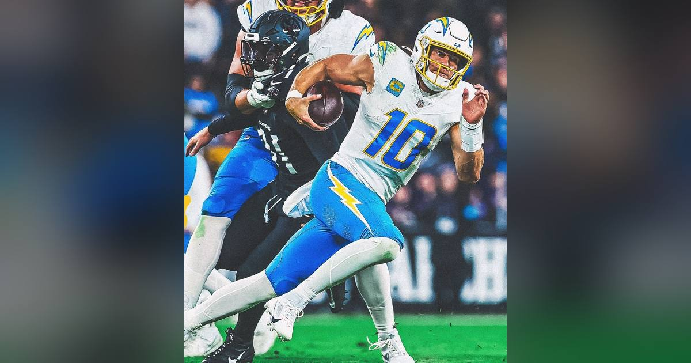

The winless Chargers bully the Ravens at the line, 23-20 — first win of the season, and no winless teams remain
Justin Herbert and Omarion Hampton ran for first-half touchdowns and the Los Angeles Chargers manhandled Baltimore at the line of scrimmage, outrushing the Ravens 160-16 in a 23-20 Monday night win — their first of the season, ending an 11-game losing streak dating to last season.

Disclosure: this post contains affiliate links. I earn a commission on qualifying purchases.
The night
The combined 15 straight losses the Chargers and Ravens carried into Monday night was a record for a Monday night game. Somebody had to win. It was the team that hadn't won all season.
Justin Herbert and Omarion Hampton ran for first-half touchdowns, and the Los Angeles Chargers earned their first win of the season by manhandling Baltimore at the line of scrimmage in a 23-20 victory at M&T Bank Stadium. The Chargers outrushed the Ravens 160-16 — and held Baltimore to zero rushing yards in the first half.
Herbert completed only 12 passes for 129 yards, but his 22-yard scoring run on the first Los Angeles possession gave the Chargers a lead they would not relinquish. He added 51 rushing yards on seven carries, and a week after taking a career-high eight sacks against Houston, he was brought down just twice.
Hampton's night
Hampton carried 22 times for 105 yards and a touchdown — the first Charger to top 100 rushing yards this season, and the second 100-yard game of his young career. His touchdown came on fourth down from the 1 with 1:56 left in the half: initially stopped by linebacker Roquan Smith, he powered into the end zone with help from a couple of teammates to make it 17-7.
The drive was set up by a Del'Shawn Phillips interception in the second quarter. Fullback Scott Matlock opened lanes all night, and Hampton was the featured back in every sense — Hassan Haskins and Kimani Vidal combined for just five carries behind him.
The other side
Derrick Henry was held to 10 yards on 10 carries, although he did score two touchdowns — a 2-yarder that cut the lead to 10-7, and a 1-yarder that made it 23-20 with 10:23 left. The 10 yards were the second-fewest of his career in a game with 10 or more carries; the only worse night was 9 yards on 16 attempts against Houston on December 17, 2023.
Jacoby Brissett threw for 340 yards in his Baltimore debut, completing 33 of 49 passes with one interception — the second-highest passing total of his career. With Lamar Jackson and Tyler Huntley both on injured reserve, the Ravens traded for Brissett on November 6 in the hope the veteran could keep the offense functional. He did, mostly. The run game did not.
Baltimore began the game by going three-and-out three straight times, and the boos rained down on a team that has now lost seven of its last eight home games. The Ravens are 4-6 after a fifth straight loss, having started the season 4-1.
The finish
With the Chargers up 23-20, Baltimore's Zay Flowers — plagued by fumbling problems in his career — lost another one after catching a pass near the Los Angeles 45 with 2:03 remaining. Tarheeb Still stripped him, Elijah Molden recovered at the visitors' 46, and it was Flowers' first lost fumble of the season.
Herbert then threw to ex-Raven Charlie Kolar for the first down that all but ended the game. Baltimore got the ball back at its own 20 with 11 seconds left, Brissett completed a pass downfield, and his Hail Mary fell incomplete.
Cameron Dicker went 3-for-3 on field goals, including a 34-yarder that extended the lead to 20-10, and Dalvin Tomlinson added two sacks for a Chargers defense that set the tone from the first snap.
What it means
The Chargers are 1-8, and one win over a reeling Ravens team doesn't change what this season is. But an 11-game losing streak dating to last season — including a playoff loss — is over, and it ended with the kind of performance that travels: a line that dominated, a running back who carried the load, and a defense that made the play of the night when the game was on the line.
For Baltimore, the embarrassment is the story. A team that was supposed to be competing for Super Bowls is now 4-6, has lost five straight, and just got outrushed by 144 yards at home by a team that hadn't won a game. The Ravens visit Carolina on Sunday; the Chargers host the New York Jets.
Gear up: Fanatics